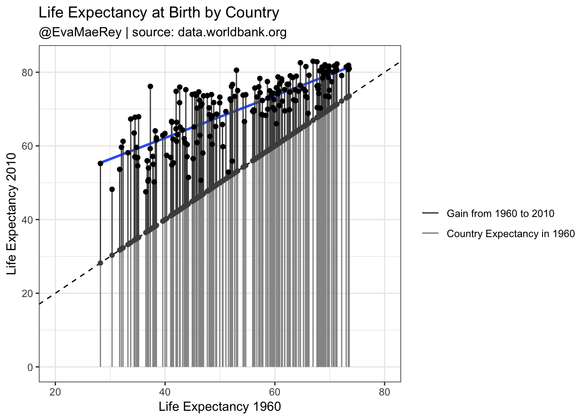

Chapter 11 Life Expectancy Increases
To dramatically show the increases in life expectancy by country from 1960 to 2010, I plot the variable in 1960 versus itself in 2010. The line of equivilance (a 45% angle) is used as a reference and shows the result that you would see if there where no growth. The vertical distance from this line is the increase in life expectancy. I also superimpose a linear model on top of the scatter plot. You can see that the gains are greater for countries that started off with lower life expectancies.
A random sample from the data set:
| Life Expectancy 1960 | Country Code | Country Name | Region | Income Group | Year | Life Expectancy 2010 | CountryName | squared |
|---|---|---|---|---|---|---|---|---|
| 42.11832 | BOL | Bolivia | Latin America & Caribbean | Lower middle income | 2010 | 66.40580 | Bolivia | 1773.953 |
| 41.23605 | BDI | Burundi | Sub-Saharan Africa | Low income | 2010 | 54.83700 | Burundi | 1700.412 |
| 39.57012 | GAB | Gabon | Sub-Saharan Africa | Upper middle income | 2010 | 62.85654 | Gabon | 1565.795 |
| NA | MAF | St. Martin (French part) | Latin America & Caribbean | High income | 2010 | 78.72195 | Saint Martin (French part) | NA |
| NA | GRL | Greenland | Europe & Central Asia | High income | 2010 | 70.85707 | Greenland | NA |
ggplot(compare) +
aes(x = `Life Expectancy 1960`) +
aes(y = `Life Expectancy 2010`) +
geom_point() +
geom_smooth(se = F, method = "lm") +
geom_abline(slope = 1, intercept = 0, lty = 2) +
# coord_fixed() +
aes(xend = `Life Expectancy 1960`) +
aes(yend = `Life Expectancy 1960`) +
geom_segment(mapping = aes(col = "Gain from 1960 to 2010")) +
geom_segment(mapping = aes(y = 0, col = "Country Expectancy in 1960")) +
scale_color_manual(
breaks = c(
"Gain from 1960 to 2010",
"Country Expectancy in 1960"
),
values = c("grey59", "grey30", "grey30")
) +
geom_point(aes(y = `Life Expectancy 1960`), col = "grey30") +
geom_point() +
labs(subtitle = "@EvaMaeRey | source: data.worldbank.org", size = .7) +
labs(title = "Life Expectancy at Birth by Country") +
labs(col = "") +
theme(legend.title = element_blank()) +
theme_bw() +
xlim(c(20, 80))